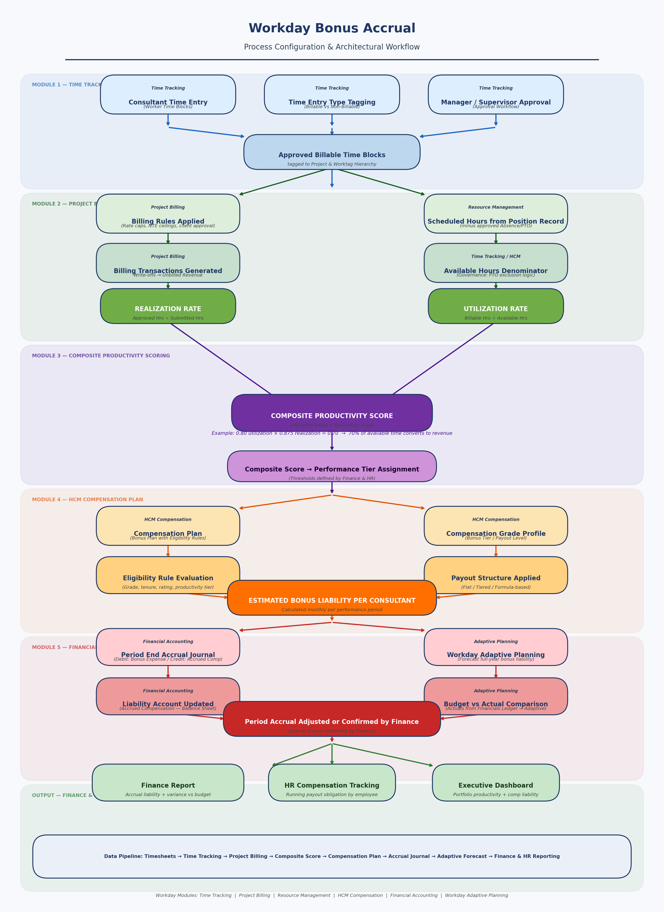

Business Problem & Outcome
Manual, Disconnected, Inaccurate
- Bonus accruals calculated manually in individual spreadsheets
- No consistent composite productivity metric across consultants
- Performance data siloed across disconnected systems
- Finance making year-end P&L corrections annually
- No visibility into running liability during the year
Automated, Governed, Accurate
- Automated monthly accrual with consistent logic across all eligible employees
- Composite productivity score calculated live from BQE Core data
- Finance received a structured reporting extract each period
- Leadership had live visibility via Power BI dashboard
- Year-end correction requirement eliminated
Composite Productivity Score
Formula
Composite Score = Utilization Index × Realization Index
Utilization Rate: Billable Hours ÷ Available Hours — measures how much of a consultant's time is charged to clients. Target: 75–80%.
Realization Rate: Client-Approved Hours ÷ Submitted Billable Hours — measures how much of the billed time converts to recognized revenue. A consultant can be highly utilized but low-realization if hours are written off.
Example: 0.80 utilization × 0.875 realization = 0.70 composite score — meaning 70% of available time is effectively converting to revenue.
| Composite Score | Performance Tier | Bonus Multiplier | % of Target Paid |
|---|---|---|---|
≥ 0.90 |
Exceeds | 1.20x | 120% of target |
0.75 – 0.89 |
At Plan | 1.00x | 100% of target |
0.60 – 0.74 |
Below Plan | 0.75x | 75% of target |
< 0.60 |
Not Eligible | 0x | No accrual |
Five-Module System
- Consultant Time Entry — hours logged against project and worktag hierarchy
- Time Entry Type Tagging — hours classified Billable vs Non-Billable
- Manager / Supervisor Approval — approval workflow validates and locks time blocks
- Output: Approved Billable Time Blocks — tagged to project and worktag hierarchy, feeds Module 2
- Billing Rules Applied — rate caps, RTE ceilings, client approval logic
- Billing Transactions Generated — write-offs processed, recognized revenue determined
- Output: Realization Rate = Client-Approved Hrs ÷ Submitted Billable Hrs
- Scheduled Hours from Position Record — gross available hours minus approved Absence/PTO
- Available Hours Denominator — PTO exclusion governance logic applied
- Output: Utilization Rate = Billable Hrs ÷ Available Hrs
- Composite Productivity Score = Utilization Index × Realization Index
- Performance Tier Assignment — score mapped to tier thresholds defined by Finance & HR
- Compensation Plan — bonus plan with eligibility rules, compensation basis, target %
- Compensation Grade Profile — bonus tier / payout level per grade
- Eligibility Rule Evaluation — grade, tenure, performance rating, productivity tier
- Payout Structure Applied — flat / tiered / formula-based multiplier
- Output: Estimated Bonus Liability Per Consultant — calculated monthly per performance period
- Period End Accrual Journal — Debit: Bonus Compensation Expense / Credit: Accrued Compensation
- Workday Adaptive Planning — forecasts full-year bonus liability; actuals feed via native Financials integration
- Liability Account Updated — Accrued Compensation balance sheet account updated each period
- Budget vs Actual Comparison — actuals from Financials Ledger vs Adaptive budget
- Output: Period Accrual Adjusted or Confirmed by Finance — control point for period close
Platform → Workday Native Configuration
Step 1 — Bonus Plan Setup
The Bonus Plan is the container object in Workday. You define the plan name, currency, plan period, and whether the plan is discretionary or formula-driven. The Compensation Basis — whether the bonus calculates as a percentage of annualized base salary or a flat dollar amount — maps directly to the target bonus percentage field I built in the Dataverse data model.
Step 2 — Eligibility Rules
Eligibility Rules in Workday evaluate dynamically against each worker's profile at the time the Compensation Review runs. Rules can reference job profile, supervisory org, employment type, hire date, compensation grade, or custom field. At the firm this logic was built as conditional routing in Power Automate. In Workday it is declarative configuration rather than workflow code.
Example rule set: Employment Type = Full Time AND Job Profile = Consultant or Senior Consultant AND Hire Date before plan period start AND Status = Active
Step 3 — Compensation Grade Profiles & Tier Multipliers
Compensation Grade Profiles are where the tiered multiplier logic lives in Workday. Each grade profile contains the bonus payout structure for workers at that grade level. The composite productivity score serves as the input variable that determines which grade profile — and therefore which multiplier — is applied to a worker for the period. This is Workday's native implementation of what I built as a lookup table in Dataverse.
Step 4 — Compensation Review (Accrual Calculation Run)
The Compensation Review aggregates worker performance data, evaluates eligibility, and calculates the estimated bonus payout per worker. At the firm this was a scheduled Power Automate flow that ran monthly and wrote outputs to Dataverse before generating the Finance reporting extract. In Workday, the Compensation Review does the same job natively — the review worksheet is auditable and every change to a recommendation is tracked.
Step 5 — Period End Accrual Journal Entry
Once Finance has the estimated liability from the Compensation Review output, they post a Period End Accrual Journal. This records the compensation expense in the current period — ensuring the P&L reflects the true cost before the cash payout occurs at year end. Worktags applied for cost center, supervisory org, and practice area ensure the expense allocates correctly for management reporting.
Step 6 — Forward Forecast in Workday Adaptive Planning
Adaptive Planning is where Finance builds the forward-looking liability view. Actuals from the Workday Financials Ledger feed automatically into Adaptive via the native integration — no manual export required. Finance builds scenario models projecting the full-year bonus liability based on current utilization trends and headcount assumptions. At the firm, this view was built manually in Excel using Power Query. Workday Adaptive replaces that with a governed, refreshable planning environment.
Live Architecture Diagram
Architecture Workflow
